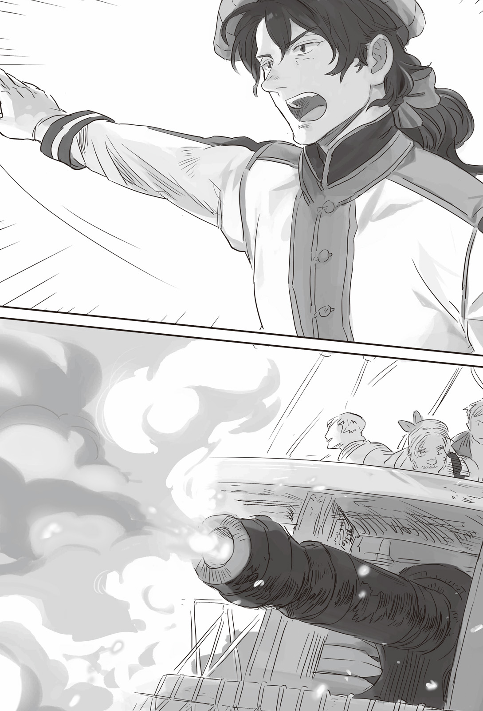

Chapter 3 –Surprise Attack of Riga
.
Part 1
Jose was boarding the new large schooner Rio. He was reclining on a specially made deck chair and relaxed leisurely.
There was a reason why he, the navy minister was personally boarding a ship.
The enemy was concentrating their force right now in preparation for the decisive battle. He would stab at that opening and launched a surprise attack at Riga that was the base of the dukedom’s navy with his main fleet. That was the gist of the tactic that he proposed this time.
Right now that tactic was progressing smoothly. The wind was favorable and there was also no sign of enemy. Rather it could be said that things were going too smoothly it felt anticlimax.
「Even so we aren’t even coming across civilian ship.]
The adjutant Seil muttered with a perplexed look.
「Well of course, that’s because it’s now forbidden to do business with the dukedom. There is no way there will be smuggling ship sailing brazenly in the middle of day like this, furthermore in Marmara Sea where pirates are running rampant.]
「Now that you mention it, that’s certainly true.]
Seil(セイル) nodded at Jose’s explanation.
Sanjuan Kingdom along with Majorca Kingdom had proclaimed war against Trystovy Dukedom. They had stopped any business with the dukedom since some time ago.
Conversely, the merchants at the Trystovy Kingdom’s side who were affiliated with Mulberry were doing their business in large scale, because of that the merchants of the dukedom who were thinking to switch side to Mlberry was increasing sharply right now.
From their perspective, there would be no problem if they simply moved their business to Mulberry. They could just transport their assets and ships little by little so they wouldn’t attract attention.
It was only natural for them to give up on the declining dukedom.
Right now most of the dukedom merchants were getting into frenzy to search for intermediary so they could negotiate with Baldr and Augusto.
The reason they were searching for someone who could act as intermediary was because there was no way the maritime guild would unconditionally accept them who chose to wag their tails to the nobles who betrayed the kingdom when the dukedom was formed.
「──Even though merchant are those who move because of money, there is still no way that we can trust the people of enemy country that easily.」
Augusto’s expression was cheerful and his bearing was calm, but he had completely worn an atmosphere that was sharp like a blade as the chairman of the Seven Elders. He carelessly refused any such merchants who wished to switch side.
Those merchants would need considerable souvenir or very influential intermediary so they could switch side to the kingdom’s side.
And then in this kind of situation the commerce within the dukedom was naturally becoming brittle.
The lack of items was serious and the increase of price knew no bound.
Even the price of the food supply that had temporarily became oversupplied at this point had risen steeply once more.
This too was because of the appearance of the reinforcement from Answerer Kingdom. Their troops were consuming vast amount of resource.
The livelihood of the dukedom populace drastically worsened. Their dissatisfaction toward the dukedom government that collected heavy tax from their small earning was exacerbated. A negative spiral was enveloping the dukedom.
The low income class was already cornered into a difficult situation. There was a rumor that the people in that social class might cause an insurrection before long.
The target of the low income class would be the wealthy. If the wealthy received such blow, the effect would also influence the dukedom’s national economy in the end.
The effect of economic blockade by Dowding Group using salt also couldn’t be overlooked.
From Jose’s observation, setting aside the military matter, the dukedom was already defeated in the economic aspect.
「However it’s a bit curious that we haven’t seen any trace of the dukedom’s navy even after coming until this far.」
「Is it because they are lured by the prospect of decisive battle with Urraca-sama just as expected?」
「Certainly it’s only human to want to gather as many ship as possible when they are faced with the prospect of decisive battle against the Tormenta Negra and Admiral Barbarino.」
There was no guarantee that the enemy was really moving like the expectation that he drew in his mind. Rather in most case the other side would move in an unexpected way. Being able to deal with that unexpected event would decide whether an admiral was wise or foolish.
Or perhaps there was a possibility of the dukedom reaching the same thinking like him──that they would launch surprise attack at the navy base of Sanjuan Kingdom, the royal capital Cadiz. Jose considered that possibility.
「That’s impossible. They shouldn’t have split their force to take on the capital’s coastal fleet and the armed merchant fleets there.」
The most they would be able to do was harassing the sea traffic there.
As expected from the intellectual general that was the pride of Sanjuan Kingdom. Jose’s prediction actually hit the nail on the head.
Although the size of the force that the dukedom invested was nearly double of Jose’s prediction, so not everything was moving as Jose predicted.
Either way, there wasn’t any reason for him to change his tactic here.
「……From ten o’clock, there are two ship silhouettes!」
「Now then, I guess it’s time……」
Jose blinked and his relaxed expression changed.
Fortunately they were blessed with great weather today. If they sunk all nuisances they encountered during the day and continued sailing during the night too with the astronomical observation, they would be able to enter the coastal water of Riga tomorrow morning.
At that point the surprise attack could already be considered a success.
「Tell the fast ships at the vanguard, don’t let them get away no matter what.」
「Aye sir!」
The four fast ships that were positioned at both flanks of the vanguard received the signal from the flagship. They increased their speed smoothly and approached the two ship silhouettes.
Setting aside the commander, the crews of each ship had skill that wasn’t inferior to Majorca Kingdom’s sailors who were led by Urraca. Jose could assert that confidently.
Jose was completely lacking the ambition to climb up the rank, but when he was placed in the battlefield like this, he was unable to suppress a different ambition from welling up from inside him.
It was the ambition of leaving his name in history sprouting inside him.
「I have also received that souvenir from Baldr-dono here.」
He wanted to see the enemy’s face when they got hit by this weapon.
Even the intellectual general Jose wasn’t a god. He didn’t even imagine that the enemy commander of the dukedom was also harboring a similar thinking.
Although there was difference in each person’s attitude, the karma that they shouldered was pointing to the same direction. That balance which looked as though it had been weighed was called fate by human.
And then the special human who was loved by the whim of fate was called as hero since the time immemorial.
The moment Jose left his name in history was already approaching near.
.
Part 2
──The navy base of Trystovy Dukedom, Riga.
It was a naturally excellent harbor located deep in the bay of Valencia. It was the base of Trystovy Dukedom’s navy that possessed a grand fleet of nearly a hundred ships in the past.
At present it split around fifty of the ships in its possession and most of them had left the port in preparation of the decisive battle.
Right now this port only had around ten ships of the coastal fleet left behind along with nearly thirty ships of civilian merchants.
Although it was unpleasant to admit, the current Trystovy Dukedom didn’t have the power to take on both the maritime guild and Urraca at the same time without the reinforcement from Answerer Kingdom.
Within the completely deserted port, there was a building made from red brick that was conspicuously larger than the rest──it was the headquarters of Trystovy Dukedom’s navy. A man was looking down from the window of that building toward the shabby scenery outside.
「What a desolate sight.」
The old admiral, Bonifatio Grandoni(ボニファティオ・グランドーニ) had returned to his post as the navy minister of Tystovy Dukedom because of Olten’s recommendation. He sighed lightly and stared at the horizon far away.
The informal resignation of the navy minister Thomazo that had been put on hold had finally been approved a few days ago because his successor had finally been decided.
When Bonifatio was still young and the old Trystovy Kingdom hadn’t been destroyed, this Riga was the biggest port at the South Seas with battleships and merchant ships crowding it.
At that day Bonifatio didn’t doubt that this Riga would one day surpass Mulberry and became the central trade port of Trystovy.
It was him who planned the detour to destroy the trade of Sanjuan Kingdom this time.
Bonifatio once studied abroad at Answerer Kingdom when he was still a young man and built a lot of connection over there. He obtained the position as navy minister as a person who was indispensable for the current dukedom.
However he was someone who had once retired from the active duty as navy officer. Bonifatio was aware that he wasn’t endowed with superhuman stamina like Olten who came back to his post as the great general.
He thought to do his duty by whipping his old bones for his motherland that was in danger. Even so his mind and stamina had been exceedingly exhausted by the severe workload.
Most likely he would only be able to do this job properly for three months at the longest.
He earnestly wished that before that the he would be able to defeat that Tormenta Negra and brought the control of the sea back to the dukedom.
It shouldn’t be difficult at all to achieve that by using that new weapon that was brought from Answerer Kingdom and the fleet that came as reinforcement.
And then the dukedom would regain its glory once more. Bonifatio intended to offer the rest of his life as military officer for that.
「Though I say that, I’m just a senile old fool who can only wait on land like this huh……」
His hands had wrinkles all over and lacked any moisture.
His lower body that absolutely wouldn’t waver even when sailing through stormy sea and his brawny arm that could support his body weight when standing on mast with just one hand were already gone.
Bonifatio smiled wryly and rang the bell near his hand. He was going to ask his subordinate to get him more tea. It was right at that moment.
──*Kan! Kan! Kan! Kan!*
「The bell rang……four times!」
His blood rushed to leave his face.
Bonifatio turned pale like a corpse. His eyes snapped open and stared toward the horizon.
Four ringing of the bell. That was the signal of enemy attack.
He didn’t want to believe that such thing was happening.
An enemy that would brave danger to attack until the deepest place of Valencia Bay of all places, the center of Trystovy Dukedom’s navy had never existed until now.
No matter what kind of battle it was, the further one infiltrated into enemy territory, the greater the risk became in proportion.
If their calculation went off even just slightly, they would end up being isolated in the middle of enemy territory.
Furthermore battleship was something that took time to build. The education of the crews were also requiring enormous amount of time. They weren’t resources that could be used up carelessly.
Because of that the navy rarely made a gamble of all or nothing. They tended to adopt the doctrine of “fleet in being”. (TN: Google it if you want to know the meaning)
「……Are there pirates getting lost until this far?」
Bonifatio murmured that hopefully. His instinct as sailor for many years was telling him that wasn’t the case, but he couldn’t help but harbor such wishful thinking.
In the worst case that the enemy was sending their frontline fleet to here, a hard battle would be unavoidable. They only had a secondary fleet that consisted of ten ships remaining in this base.
This place was the home port for the whole navy, not just for a fleet. A considerable number of soldiers was stationed here, but in the end they were only for land battle.
「Send the emergency alarm to the land battle unit!」
「Sir!」
Bonifatio yelled angrily to his subordinate as though to vent off his anger.
He felt nothing but vexation to his old body that wouldn’t move as he wished even at this emergency.
「Now that it has come to this I don’t care even if all our ships get annihilated! Protect at least this harbor no matter the cost!」
The ships were also precious, but this Riga had the materials needed to preserve the fleet and the dock necessary to repair and maintain the ships. This base was equipped with the greatest harbor function within the country.
If this harbor was lost, the dukedom navy wouldn’t be able to maintain their battle strength anymore.
No matter how mighty the fleet in the dukedom’s possession was, the fleet wouldn’t be able to exist without the home port to support them.
Although as long as they could just prevent the enemy from landing, the damage shouldn’t become that serious…….
「──Just where in the world these idiots came from? To do something this reckless……」
Bonifatio strained his eyes toward the horizon. He deciphered the flag signal that was sent from the resolutely accelerating patrol ship and groaned lowly.
If his eyes weren’t mistaken, that flag signal was saying 「The enemy fleet is from Sanjuan Kingdom, it has the commander flag of the main fleet」.
That intellectual general Jose Liberiano was personally leading the fleet here.
There was no way this would finish with just as a surprise attack that was done whimsically.
.
「Achoo!」
Jose made a powerful sneeze from the itchiness that he suddenly felt in his nose.
「I wonder if someone is talking about me right now?」
「Well, it must be Riga’s commander.」
The adjutant Seil smiled wryly with sarcasm at Jose who was wearing a somewhat stupid look.
This general must have forgotten his nervousness in his mother’s womb when he was born. It was mysterious that although he looked unreliable like this, he was also reliable at the same time.
Even if he searched the whole continent, there wouldn’t be another intellectual general who played the fool like this other than Jose.
They had seen the contact with the patrol ship just now. From here on Jose’s fleet would finally be discovered by Riga.
Soon there would be some kind of reaction from the other side──most likely the enemy would intercept them.
「Well, it’s already too late at this point though.」
By the time Sanjuan Kingdom’s fleet had approached until this distance to Riga, the match had been half decided already.
Even if the fleet that left Riga hurried to come back here, they wouldn’t make it in time anymore.
There was also no sign that the enemy had seen through Jose’s plan right from the start and placing a fleet here to ambush him.
If there was such fleet here, it would be strange that they hadn’t sailed already to intercept them.
For any decent navy officer, getting their home port damaged was something that they couldn’t possibly allow.
It seems I win the bet, Jose whistled cheerfully.
「Admiral, your whistling sucked.」
「I think I won’t get punished even if I allow myself to get carried away slightly you know?」
Jose pouted in dissatisfaction.
It was then, a report came from the watcher above with a ridiculing tone.
「Enemy fleet is approaching with horizontal formation. Their number is around ten. It looks like they are wishing to listen to the admiral’s whistling!」
「Good grief, I wonder why my subordinates are this lacking in respect toward their superior.」
Jose scratched his head with a troubled look. Even so his gaze turned serious.
「Column formation, two lines! Let’s open a hole in the enemy’s formation right away.」
「Column formation two lines, sir!」
.
「How daring……they are really looking down on the dukedom.」
The commander of the coastal fleet, Dante Alighieri bit his lip in vexation.
In the first place, just allowing an enemy fleet to approach this closely to Riga, the central naval port of the navy was already a great disgrace that would be looked down by the whole world.
This disgrace had to be wiped away no matter what.
──Even so the fact that their side had inferior number and quality couldn’t be erased. If they fought head on, Dante’s fleet would be exterminated in less than an hour.
「We are sailing diagonally to push those guys into the bay!」
「Sir!」
Although he was reluctant to do it, he didn’t have any other way than borrowing the strength of the fleet that was protecting Riga port.
If he could skillfully launch pincer attack to the enemy, it shouldn’t be impossible by any means to corner Sanjuan Kingdom’s fleet to destruction.
(In the past we wouldn’t even need to do something like borrowing the strength of the defense fleet.)
If it was Trystovy before the civil war, even after dispatching a fleet to the decisive battle, they would still have nearly thirty ships remaining behind in Riga.
A navy that had to empty their home port to attack wasn’t a navy. The navy of a large country had to always some strength in reserve for defense and as spare in case it was needed to reorganize.
The fact that they were slowly losing that power was painful to Dante.
「Enemy fleet is splitting into two columns!」
「Hmph, they’re underestimating us thinking they can easily break through!」
Against Dante’s horizontal formation, Jose’s two columns had high penetrative power and it could also flexibly react against enemy attempt to hold them in place.
However it wasn’t a threat for Dante because he had intended the enemy to go through right from the start.
「Let’s bloody their nose! Open and turn the jive!」
「Sir!」
The distance was shrinking rapidly. Dante was enveloped in excitement and trembled.
It wasn’t fear. Rather he even wanted to say thanks for being given a flashy stage like this just when he was left behind from the glorious battle.
「Unfortunately we only have this single shot. Though I never even dreamed that the chance to use it will come like this……」
The rocket arrow that Federigo and Bale had was a precious weapon for the decisive battle, but there was just one of it left behind in Riga as an example.
── As long as we have this.
It should be possible enough to remove the obstacle and circled to behind the enemy.
No, perhaps it might even be possible to make the enemy fleet stopped functioning. After all the enemy didn’t know that they only had one of this weapon.
「Port easy, keep the route as it is.」
「Aye sir.」
They could do it. It was possible if it was him.
He would show to Bonifatio who was watching this from above the red brick building, that his skill wasn’t inferior by any means compared to Federigo and Bale.
Dante’s fleet put the flagship at the lead and the horizontal formation changed shape to slightly diagonal formation.
The distance had been closed until the crews of both sides could see each other’s face.
── Here!
「Hard starboard! Prepare to fire the rocket arrow!」
「Sir!」
The ship’s hull made an ominous creaking sound from the sharp change in direction.
Dante paid that no attention and his ship rushed forward as though to graze the tip of the right column of the Sanjuan Kingdom’s fleet.
「FIREEEEEEEEEEEEEE!」
The rocket arrow hit from that point-blank range. The lead ship that was made from wood couldn’t possibly endure it.
The front part of the starboard was blown away by the explosion. The lead ship’s speed dropped with a jerk as though it had collided with an invisible wall.
And then when water started to flood inside, the ship’s stern was lifted up as though it was doing handstand and sunk.
Sailors were falling off into the sea.
「──How’s that!」
A surprise attack with a perfect timing, and then the enemy ship sank brilliantly.
No matter how superior the enemy was in number, this attack should be more than enough to throw them into confusion.
In fact, the loss of the lead ship and above all else the attack method was dealing a great shock to Jose.
Dante’s decision to aim at the lead ship was tactically correct.
The lead ship in column formation was the pointer of the fleet’s movement. If the lead ship became unable to function, the second ship would take its place to be the guide for the ships behind it. But no matter how much training the fleet had received, it was impossible to reduce the transition time into zero. The fleet’s movement would inevitably become messed up.
But, if only time could be rewound, Dante should aim at Jose’s flagship that was positioned at the center of the column no matter how herculean that task would be.
Because──.
「Just like how we are preparing new weapon, the enemy too is also making their own preparation. How stupid of me, to forget such basic lesson like this.]
The attack from the rocket arrow was unexpected, but it wasn’t something that hindered Jose’s plan.
「……This is payback.」
Hitting the nose tip of Sanjuan Kingdom’s fleet and then immediately slipping through the right to circle to the enemy’s rear.
It looked like Dante’s strategy had succeeded completely.
Even if the enemy fleet changed direction to chase after them, they wouldn’t make it in time. And the enemy also wasn’t in the situation that could swiftly change direction while their formation was in such disorder.
Dante breathed roughly while glaring at Sanjuan Kingdom’s fleet that he was leaving behind.
His eyes caught the small window that was opened at the ship’s side.
「Commence firing!」
「Commence firing, sir!」

The distance between Dante’s fleet and Sanjuan Kingdom’s fleet was dozens of meter. His decision to approach until the very limit so the rocket arrow could hit became the ruin of him.
Although perhaps Dante didn’t have the awareness that he was heading into his ruin.
Because what he could feel was only the fact that crimson flame was covering his whole field of vision.
It was the ship version of the flamethrower that was once be used by Antrim army in the war against Haurelia Kingdom.
The lead ship was sinking. The second and third ships that were following behind it also couldn’t avoid the torrent of spewing flame. Dante’s flagship and the second ship were hit directly without being able to dodge.
「Fire? F-F-FIREEEEE!」
「Stupid idiot! Put out the fire right away! Extinguish it before the whole ship is burning!」
「It’s no good! The fire won’t vanish!」
「It won’t vanish even with water! What the hell! What the hell is this!」
Because the commander Dante was reduced to ash in an instant, the ships from the third ship above also missed their timing to escape.
When a fleet moved as one, the ships fundamentally had to follow the movement of the ship that became the guide. They weren’t allowed to take movement as they pleased.
Because there was no instruction for each ship to escape by themselves, it was only natural for them to follow after the lead ship.
The third and fourth ship were also swallowed by the torrent of flame. They burned up like torch. After that it became impossible for the fleet to maintain their united action as an army.
Finally one by one the ships tried to perform tacking to escape toward Riga, but the coastal fleet had stayed close with each other and rushed to the bosom of the enemy. They were surrounded by Sanjuan Kingdom’s fleet before they could finish changing direction.
「Don’t let even one of them get away! Stop the firing!」
「Prepare for boarding action! Throw the rope!」
The coastal fleet had been reduced until six ships. It was impossible for them to break through the heavy encirclement of Sanjuan Kingdom’s fleet.
Each ship was attacked by two ships or more. The time needed until the coastal fleet was annihilated didn’t even need one hour despite their desperate resistance.
.
Such gruesome slaughter was unfolding before his eyes.
Bonifatio clenched his teeth so hard that blood was seeping out. He continued to glare at the scene of his beloved subordinates turning into sea scraps.
If this happened at his younger day as a ship captain, if the battleship Guryuwas that had served as his partner for many years was here……
Sanjuan Kingdom’s fleet that had finished eradicating the coastal fleet formed formation once more and began to head to Riga.
The time for this Riga to become a battlefield had finally arrived.
When he thought that, Bonifatio couldn’t endure just watching the situation quietly from the headquarters terrace anymore.
「Prepare all the fire arrow that you can! Adjutant! I’ll leave it to you to take command of the catapults!」
「S-sir! W-where will your excelllency go to?」
「I’ll borrow the civilian ships. Only those who don’t need their lives follow me.」
「Please stop from doing such rash action! The civilian ships won’t be of any help at all!」
The civilian ship was built for commercial purpose from the very beginning unlike battleship. Civilian ship was constructed to be loaded with a lot of commodities.
It couldn’t move fast and its maneuverability was also poor.
Its sea gauge was also high. If the wheel was turned drastically, the ship could even capsize.
It should be military common sense that civilian ships couldn’t be counted as battle strength no matter how many of them were gathered.
「What is necessary right now is to limit their movement. The catapults and fire arrows will be useless if they are allowed to freely move around.」
「──Admiral!」
In short Bonifatio wanted to use the civilian ships that were useless for battle as obstacle to limit the movement of Sanjuan Kingdom’s fleet.
Of course, if he did something like that then the life of the people in those ships would be lost.
「Please wait! For that kind of role I will……!」
Bonifatio gently placed his hand on his adjutant’s shoulder.
However the grip on that shoulder wasn’t something that belonged to an old body. The sharp eye glint that didn’t allow any compromise in Bonafatio’s eyes spoke of his determination more eloquently than anything.
「……I accepted this post with this old body is to obtain a place to die. You shouldn’t get in the way of the big moment of an old man. It will be the shame of my whole life if I don’t put my body on the line here.」
「I thought that would be the case. Are you going to be a ship captain again after so long?」
Ten-odd familiar men were waiting for Bonifatio as he got down from the terrace and exited the entrance.
Every single man there was similar with Bonifatio. They were all old man with deep wrinkles carved on their skin.
「You are really perceptive, vice captain.」
「Well of course, in this whole world we are the only one who can guess just how rash you are captain.」
The old man with red face that was called vice captain distorted his expression and chuckled ‘shishishi’.
He was Bonifatio’s vice captain when Bonifatio was still a ship captain. He should have retired from the military a long time ago.
All the other men were also Bonifatio’s subordinates who had already retired.
Why were they here? Bonifatio didn’t ask that.
Things like logic and reason didn’t matter anymore. Surely they were also the same like him. They undoubtedly came here because they instinctually felt that this was their place to die.
「The last time we fought was in Guryuwas. You guys haven’t turned rusty right?」
「I should be the one saying that to you captain. Please take care to not fall on the deck.」
The men of the sea laughed joyfully.
They weren’t acting tough to forget their fear toward death. The adjutant couldn’t help but feel envious at that.
.
「──Only those who can hear my voice, listen!」
Bonifatio cheerfully pointed his index finger to the sky like a child who was going to play tag.
「Those who want to die while laughing, come with me!」
This boiling blood, this pleasure that couldn’t be held back, this supreme feeling of fulfillment that was beyond description.
Bonifatio believed that he had regained the youthful days of his heyday, at least in feeling.
Instigated by that spirit, the sailors who couldn’t participate in the coming decisive battle came from everywhere and followed behind him.
Their number surpassed a hundred in the blink of eye.
「──Yosh, we’re borrowing these ships for a bit!」
Even his way of speaking returned like a young man. He started running, but unfortunately his body that had become fat from excess flesh couldn’t look as gallant as his youth.
The old men were going to throw away their lives right at this moment for the sake of the dukedom.
The adjutant sent off their back with respect from the bottom of his heart.
.
「Prepare to aim!」
Riga port was equipped with twenty catapults for defensive purpose.
Among them there were six large catapults that were set up at high place. They bared their fang toward Sanjuan Kingdom’s fleet that was infiltrating into the port with a trajectory of a loose curve.
「──Shoot!」
The stones were fired in parabola arc. They landed on water several dozen meters away from the fleet with a large splash.
From the start catapult wasn’t a weapon with high accuracy.
The adjutant didn’t show his disappointment at least on the surface and ordered his men once more.
「Reload for the next shot! Hurry!」
.
「Eh? Admiral, the merchant ships are starting to move there?」
The adjutant Seil noticed that the merchant ships that should be completely useless in the battlefield were starting to move.
However their timing was too slow.
If they intended to escape, they should have moved while the coastal fleet was fighting just now. It was pointless to move now. Merchants in general would treasure their life more than their ship, so they surely had escaped to a safe place.
「──I see, it’s not just for show that people said Trystovy navy controlled the south seas in the past.]
「What do you mean?」
「They are planning to face us on those ships.」
「That’s a joke right?」
Seil hurriedly looked again at the merchant ships that were starting to move.
He saw that their movement was brisk like battleship and felt astonished. In the opinion of proper military officer, such act was nothing more than a suicidal act.
「They themselves are fully aware that they are committing suicide. They are planning to use their own body as shield to protect the port.」
Although those ships weren’t suited for fighting, a merchant ship that was loaded within capacity could be sufficient to act as obstacle.
The enemy intended to put their body on the line to restrict the movement of this side. And if a chance presented itself they might even be able to reduce the force of the opposing side.
Above all else, they should have seen the might of the flamethrower just now.
Even after witnessing such gruesome sight, they boarded the unreliable merchant ships and headed this way. Jose felt a deep respect toward the dukedom navy.
「──At the very least we should give everything we have to defeat them like the hero they are.]
.
The people who accompanied Bonifatio numbered 128 people at the end.
And then they succeeded in hijacking five merchant ships that were being anchored with the excuse of borrowing.
「Send the bill to the next navy minster later. I won’t be able to settle the payment anymore.」
Bonifatio brazenly boarded the ship without a shred of sorrow in his posture. He climbed up the mast while shaking his heavy body in annoyance.
「Hou, that opened window on the ship’s side──in that case, there are ten ships that can spew that flame.」
「Good grief, even though we only have five ships.」
「New weapon is unexpectedly something that is lacking in number, just like our rocket arrow. Now then, I wonder how many times they can spew that flame again.」
Bonifatio sported a powerful smile that could only be made by a man who had made his resolve.
「──We just need to hold out until we are reduced to ash, right?」
What they should protect was Riga’s naval port function, and then accumulated military supply and the non-combatants who were necessary for maintaining the port.
They would sacrifice themselves for that.
Bonafatio’s subordinates didn’t misunderstand his sorrowful resolve.
「Unfortunately it doesn’t suit me to just obediently allow other to burn me.」
「Then……nothing to do but giving them a single blow back as retaliation.」
.
「──Prepare to fire.」
「Against merchant ships like that? We will run out of full if we use it too excessively you know?」
Seil spontanoulsy protested at Jose’s order to use the precious flamethrower against mere merchant ships. He felt that it would be stupid to consider them a threat.
「Ship handling skill cannot be underestimated. Those guys are planning to ram themselves on us and die.」
「Aa, it’s going to be troublesome huh.」
Seil said troublesome as praise. A skilled man who had decided to die wasn’t an opponent that could be underestimated no matter how wide the difference in strength there was between them.
「I have no intention to bear any loss to our fleet here. Finish them off with certainty.」
「Aye sir!」
The firing range of the flamethrower was short.
There was a risk of the enemy ship ramming at them if they were lured until the range of the flamethrower, but they wouldn’t be able to attack the port if they feared being rammed and only ran around. There was no other way other than to approach the enemy and annihilate them.
Bonifatio who knew that his ships were sluggish and couldn’t fight properly considered that as a rare opportunity instead and charged head on.
「Don’t you worry captain. I won’t let go of this wheel even if I die.」
Bonifatio watched in astonishment at the vice captain who fastened the wheel on his own body.
He too understood.
If they wanted to at least land a blow back, their only choice was to slip past the flame. He also understood that nobody would be left alive after the ship managed to slip past the flame.
「It had been fun, vice captain.」
「──I want to fight together with captain again even when we are in hell.」
The two grinned at each other. Bonafatio and his vice captain glared at the long nozzle of the flamethrower that would swallow them with a jaw of flame.
「──Trystovy Dukedom, banzai.」
It was unknown whether their feeling would reach the heaven or not.
However there was just one fact that remained. One of the merchant ships that were roasted and went up in flame slipped past the flamethrower with a sluggish speed and crashed on one of the ships of Sanjuan Kingdom’s fleet, bringing it down.
.
In the future this fleet’s surprise attack to the stronghold of the enemy country would be called as Surprise Attack of Riga. Half of the port was destroyed and it shocked the whole world.
Although without Bonifatio’s great efforts, the damage wouldn’t stop with just half, but that matter mostly stayed unknown.
Until now the victory and defeat of a navy was only decided through a decisive battle between fleets.
However a fleet would lose the majority of its strength if they lost their base.
The possibility of the war being settled in such form was displayed as fact here.
What was even more surprising was that both sides committed new weapons that contained the possibility of completely changing the way sea battle was carried out.
There was no way that battle didn’t influence the stalemate in the civil war that surrounded Trystovy.
.
Part 3
As expected it was the commoners who first guessed that the way wind blew in the war had changed.
They finally sensed it on their skin that the dukedom was being cornered.
That was only natural.
The heavy tax only kept increasing. In addition commodities were in short supply day by day.
The people would go hungry like this before long.
The suffering of their life itself was what telling them more clearly than anything else that the dukedom was at disadvantage.
Then a rumor reached them in such situation. Supplies were in excess at Mulberry and its surrounding. Everyone there lived a life that knew no hunger.
In fact with the way the maritime guild put all their effort in procuring military supplies, even the enormous storehouses of Mulberry were unable to store all those items that the rest had to be piled up outside at the street.
The boom provided working place and money for everyone. Even the commoners of the lower strata were also receiving the blessing of the economic effect.
In that respect, it wouldn’t be an exaggeration to say that the commoner in the kingdom’s side was enjoying prosperity.
So it was also a natural flow that the people of the dukedom who spent their days in suffering to wish for the rule of the kingdom over them.
The southern part of the dukedom that was especially close to Mulberry was being enveloped in a clearly perilous atmosphere.
.
「Can’t we do something so we can quickly welcome his highness Baldr’s rule here?」
「Those nobles has completely returned to their original stance since the reinforcement from Answerer Kingdom arrived.」
The name of the man who frowned in displeasure while groaning was Basch.
He was a man who was serving as a village chief in the territory of Count Continerri who was assassinated by Martell while in the public he was said to be executed because he was plotting a rebellion.
The family of Count Continerri was also executed and then Baron Pierro became the new feudal lord there. He was the very picture of a tyrant even putting it mildly.
He increased the tax to the people by nearly 40% as though to say that there was no need to be compassionate to the people of a traitor. At this rate the people with no stamina would die in hunger before long. Old men who couldn’t see tomorrow any longer were also already starting to appear.
Even if it wasn’t that bad, some families with relatively a lot of children were starting to sell their children as slave. In the long term this territory wouldn’t be able to avoid the decrease in population and the reduction of the economic scale.
The populace couldn’t help but pray so that stupid feudal lord would be fired from his post or executed if possible. The sooner the better.
「……What is the reply from the messenger that we sent last week?」
「Don’t act rashly, is the reply that we received. If we became the people of the kingdom, they won’t treat us badly by any means, but right now the number of their soldier is still far below the dukedom so they still need more time.」
「That will be too slow! Is his highness Baldr telling us to die in hunger!?」
A man who was about the same age as Basch at the middle of his thirty──Dreher hit the table loudly with his hand that had grown thin like a revenant.
Dreher was Basch’s childhood friend.
He didn’t take up the post of village chief because his land wasn’t as big as Basch’s, but he was a helpful man and his influence within the village wasn’t inferior at all compared to Basch.
There was a reason why he was this enraged.
Dreher had a sickly wife and a son who was in his growth period.
The food portion of his family had been reduced and he even had given his own portion to his wife and son. Even so they were reaching their limit.
Especially because of the bad weather recently, his wife’s condition worsened and she was in a critical state right now.
She had to be given a food that could give her energy as quickly as possible. And if his wallet allowed it there was also a need to ask a healer to examine his wife.
But there wasn’t a single healer in this remote village where there was no money to be made.
Continerri wasn’t incompetent by any means as a feudal lord. He always hired healers for the sake of his populace, but Baron Pierro dismissed all those healers.
Dreher’s last hope was only one. He could only cling on the excessive economic clout of Baldr and the maritime guild.
But that hope had time limit attached.
It would be pointless if Baldr only came after his wife had died.
「──I can’t wait anymore. I’m going to do it.]
「Wait. It’ll be pointless to do it if you only end up losing your life. We’ll also ask the neighboring villages to join. At least wait until we get their reply.」
「This isn’t just my problem alone. Cookie and Jura’s families also can’t endure anymore. I can’t just sit quietly watching people dying.」
「Dreher……」
Dreher intended to gather the men in the village who could fight and take down the feudal lord.
And then they would seek Baldr’s protection using the feudal lord’s head as fait accompli.
Baldr who raised the flag of the kingdom’s revival and the populace’s liberation wouldn’t have the choice of abandoning the people who had done a meritorious deed.
In Basch’s opinion it was a hole-riddled plan that couldn’t even be called a plan.
However it was also the truth that they had been cornered to the brink that they could only rely on such hole-riddled plan.
「Do you think it’s possible? Even a trash like that is still a noble. The professional knights are tough you know?」
The power of a mere hundred villagers would be just like a mantis’s sickle before the professional knights whose occupation was to fight, a courageous but a doomed resistance.
He could already see how they would be annihilated in less than an hour.
It wouldn’t even be a fight unless they had at least five hundred people. They would need to gather the men of more than three villages around here. That was Basch’s thinking.
「──We aren’t going to fight head on. That stupid lord has forgotten. That most of his servants are also commoner like us.]
He wasn’t planning to rush to his death like a joke.
For the sake of his beloved wife and son, he would brave danger while also returning alive. Dreher hadn’t given up surviving.
.
──Two days after such discussion.
「Oi, did you hear?」
「Yeah, they said that Riga was hit by a surprise attack from Sanjuan Kingdom and got destroyed.」
「Good grief, just what are this so called reinforcement from Answerer Kingdom doing.」
The news of defeat of Riga was already starting to reach the soldiers.
If Baldr started marching north, this territory of Baron Pierro that was the key point of the southern part of Trystovy would definitely become a target.
The news of defeat at Riga wasn’t just somebody’s else’s problem for them who would have to stand at the frontline when that happened.
「At this kind of important time……」
The soldiers looked at each other’s face and sighed.
No matter how disadvantageous the battle was, the soldiers could fight as long as the commander could show them the objective and hope.
Just what were they fighting for? And what should be achieved so they could be said as victorious?
There were times that even when their fortunes of war were bad and they got annihilated, victory could still be obtained for the whole.
The condition for being an excellent commander was being able to share such objective with the soldiers.
But Baron Pierro was only interested in squeezing out tax from his new territory while personally enjoying luxury.
In fact, as long as he could protect his current position and treatment, he wouldn’t even hesitate to surrender to Baldr.
There was no way the soldiers’ morale could rise like that.
The knights who acted as the superior of the soldiers were also looking like they had bitten sour grape seeing how Pierro was still so relaxed.
In their assessment, it wouldn’t be strange even if the battle started anytime with the current situation.
If Pierro had money for indulging in pleasure, he should use it to ready his military and supply as much as possible.
They knew that Pierro was thinking that even if they lost, he could just surrender and the enemy wouldn’t treat him badly. That naivety made their teeth ached.
Certainly if Baldr treated a noble who surrendered to him harshly, there might not be even a single noble who surrendered to Baldr in the future. Thus a surrender would be treated leniently──perhaps.
However it shouldn’t be forgotten. The fact that the dukedom’s side had assassinated the chairman of the Seven Elders Piaggio.
The possibility of Baldr being driven with anger and beheading Pierro to show his head as an example to others wasn’t low by any means.
The nobles of Trystovy Dukedom were under so much impression that they were a privileged class to a degree that they couldn’t even imagine such likely possibility.
Nobility was sacred. They couldn’t be compared with mere commoner like Piaggio. The nobles were thinking like that as though it was only natural.
「……Thank you for your hard work in your duty……」
「Hm? A maid huh. Sorry to bother you……」
A young maid handed the knight a cup of hot water that was giving off warm steam. The knight let the tension in his shoulders to leave and averted his eyes from reality.
The warm and slightly sweet herb tea was truly the ideal thing to allow him to have a change of mood.
The knights enjoyed the scent for a while before they drank the tea.
The herb also had the effect to make one more awake. It was one of the few enjoyments for those at night shift guard duty.
「……Delicious.」
It felt like it was sweeter than the usual tea.
Was it his tired brain that made them felt like that? Either way the knights felt like their frayed nerves were being soothed.
The knights let out a sigh of relieve, then their eyelids suddenly turned heavy.
「No good, I guess I’ll go feel the night wind to make me feel awake.」
「What, you too? I too suddenly feel sleepy……」
*Bam* There was a loud sound. When they turned their eyes in surprise to that direction, a colleague was lying down on the ground while sleeping soundly.
Oi oi, don’t sleep at that kind of place. Go lie on the bed if you’re going to sleep, also you got to stay awake until the next shift come to relieve us.
The man who intended to call out to his colleague actually also couldn’t say anything and slowly sat down. He was squatting without being conscious about it.
Was he more tired than he thought?
With such thought as the last thing in his mind, the knight’s consciousness got dragged into a pleasant drowsiness.
.
*Shiin*, the castle of the feudal lord had fallen silent. The villagers who were led by Dreher were able to easily enter.
Their number had bloated up until 130 people in the end. The cause was Dreher’s popularity that reached until even the neighboring village.
That number would increase even more if they got a bit more time.
No, Basch was secretly thinking that they should increase the number of their comrades even more. If they could take Pierro’s head successfully, they might be able to rally the surrounding villages and gathered nearly a thousand people.
──For that too first they had to obtain Pierro’s head.
When Dreher gave the signal, the castle gate was opened by a servant who came from the same village.
Most of the soldiers were already in dream land.
The soldiers were sound asleep and showed no sign of waking up. Dreher and the others swiftly tied them up.
Even the soldiers who could display peerless strength in battle against commoner were relying on commoners to take care of most of their living situation.
Turning the commoners into enemy exposed a completely defenseless weakness toward them.
Although the commoners were doing this to protect their livelihood, originally the number of case where the weak bared their fang toward the strong was really limited.
They took the risk to stake their all in a gamble like this was exactly because of Pierro’s bad government that had gone beyond the bound and because of Baldr’s existence as the liberator that was right before their eyes.
.
Pierro had ordered a naked beautiful girl to serve him tonight and enjoyed the sensation of smooth skin. He didn’t notice that his destruction had approached until right in front of his doorstep.
Pierro inhaled the sweet aroma that drifted together with the faint smell of sweat and yielded his body into a pleasant fatigue.
He was unable to live this luxuriously when he was still just a feudal lord of a small territory.
He would never let go of this life no matter what he had to do.
It didn’t matter whether it was the dukedom or the kingdom, he wouldn’t let anyone lay their hand on his territory. Pierro resolved that he wouldn’t hesitate to commit any betrayal no matter how despicable for that.
He didn’t even want to remember his previous poor and wretched living situation.
The self-control that Pierro had when he was still a baron managing a small territory had been gone from him.
The current Pierro couldn’t even imagine that his current luxury came from the blood and tear of the populace.
──*Bang!*
His bedroom’s door was opened violently without any knocking beforehand.
「What’s going on-!」
How dare someone did something so rude and boorish. Pierro yelled furiously because his sweet moment after making love was trampled like this.
「You must be Baron Pierro.」
「Who do you think you are talking like that to me! What kind of outrage is this!」
Pierro hadn’t understood his situation even at this moment.
Why in the world commoners with shabby appearance were coming into his bedroom?
His mind was onlyfilled with the thinking of how outrageous these people were acting.
「Even your luxurious life that doesn’t care of your own position is coming to an end now.」
Dreher unsheathed his sword with a wrathful expression.
Seeing that, Pierro finally realized that his life was in danger.
「What are you doing! Knights! Cut down these insolent fellows quickly!」
「Unfortunately all of them are sleeping right now. Even the formidable knights are helpless before sleeping drug.」
「Do you know what will happen to you all if you do something like this?」
Pierro was threatening Dreher seriously. He wasn’t bluffing at all.
A commoner who killed a noble wouldn’t have any place where he would be accepted in this country. Sooner or later they would receive retaliation that was several times greater than it should be.
It wasn’t just the culprit who would be executed. His family and friends, or perhaps his whole village might also get executed.
Did he have such resolve? No way he had it. That was what Pierro believed.
Till the end he was thinking that the other side had the same perspective like him and they surely also didn’t want to lose their life.
That was why Dreher’s words were completely unexpected for Pierro.
「──What’s the point of extending our times of death only by half a month at best?]
「Hah?」
Dreher’s words stabbed Pierro’s neck without giving him any time to digest the meaning of those words.
.
The populace in Baron Pierro’s territory was uprising.
That shocking news reached a single man who had been waiting impatiently with a terrifying speed.
「Magnificent. No, this is truly great. Your resolve and heroic end will surely be passed down to the future generations──as tragedy.]
Count Valerie Ost sported a cruel smile in satisfaction.
.
The populace who were forced into submission were in jubilation when they witnessed Pierro’s head that was displayed in the public square. It was the fitting end of a tyrannical lord.
At the same time, a messenger departed toward Mulberry.
The messenger expressed the people’s oath of loyalty as well as their wish to enter under the kingdom’s protection.
Pierro’s head was the unshakeable proof of their oath.
The people who knew of the powerful Trystovy Kingdom in the past went into uprising and demanded for Baldr’s government. That fact had a big meaning.
Looking at the effect it gave to the dukedom on the whole, there was no choice for Baldr to not save them.
But, just this time the opponent was too bad.
Behind these people’s spontaneous action was the shadow ruler of this country, Count Valerie Ost’s power at work.
Behind the expensive sleeping drug that commoner should be unable to get their hands on and the cooperation of the castle’s servants were actually the invisible guidance of Valerie.
「It will be troubling if the populace’s dissatisfaction explode randomly. That’s why it’s necessary to make them explode to suit my convenience till the end.」
The uprising of the populace couldn’t be avoided with the way the circulation of goods was worsening and their destitute situation. It was only a matter of time.
Valerie chose to intentionally make them explode in the manner and time of his choosing.
Actually several thousand troops of the dukedom had been on standby and ready for battle around the territory of Viscount Continerri.
They were put there under the pretext of preparing to face Baldr’s army.
.
「──The punishment for murdering a noble is the slaughter of three generations of family.」
The dukedom army began their march from the four directions. They went to the extreme with their ferocity.
Mere peasants dared to kill Pierro and exposed his head for everyone to see. The fury of the nobles against such act couldn’t be measured.
「──It will be better to make an example of them. The more gruesome the better.]
There was a man who whispered that into the ears of the nobles.
It was none other than Valerie. He told them that they had to make the commoners’ blood ran cold once, to make them knew what would happen if they went against nobles.
The nobles all nodded in agreement at Valerie’s words without hesitation.
Mere commoners laying their hand on the nobility’s vested interests wasn’t something that could be allowed to happen no matter what.
As the result, the populace of the old Continerry territory received a surprise attack with the amount of troops that far surpassed their expectation.
.
「──Impossible! Where did all these soldiers come from?」
Dreher was dumbfounded because the castle had been surrounded by dukedom army before they realized it.
This was too fast no matter what.
This fast reaction couldn’t be explained unless they had been standing by nearby from the beginning. But if that was the case, he couldn’t understand why they would allow Pierro to be killed without doing anything.
「Take the bows! Don’t let them get near the castle gate!」
「O-ou!」
Dreher ordered his comrades even while he couldn’t help but realize that this was the end.
Like this they didn’t have any hope to hold out until Baldr’s reinforcement arrived.
Dreher and others resolved themselves to at least not die in shame. But then a scene that was cruel and ghastly to the extreme was pushed before their eyes.
「The heinous bloodlines of the like of you mongrels are unneeded in this world.」
「Don’t tell me──Daria? Uisbe?」
It wasn’t just Dreher. Screams of despair rose from everywhere.
The family that they wanted to protect even if it cost them their life had been reduced into an atrocious figure of just their head outside the castle.
Dreher and others spewed out curse with tears of blood. The nobles haughtily laughed in ridicule at that.
「The heads of these insects doesn’t even worth a drop of blood of Baron Pierro who was killed by you mongrels. At least die with regret scorching your whole body.」
A noble cackled and kicked the heads.
The sound of Dreher’s patience snapping could be heard clearly at that moment.
「Don’t move from there. I’ll teach you that there is no difference between a noble’s head and a commoner’s head.」
They wouldn’t be able to avoid defeat even if they stayed cooped up inside the castle like this anyway.
Rather than dying from being slowly toyed with, he wanted to die gloriously while resisting till the end.
His remaining comrades also felt more or less the same like Dreher.
They didn’t think of surviving this by themselves at this point.
The populace had truly turned into suicide soldiers. But what waited for them was an even harsher reality.
After losing their fear of death, they might be able to contend even against the dukedom army if it was in close quarter combat despite being amateur.
However what was waiting for them was a rain of thousands of arrows that filled the sky.
They were unable to dodge the pouring rain of arrows. Their whole body was pierced with arrows and they expired while looking like hedgehog.
「Cowards! Don’t you even have the courage to take up your sword!」
「Our sword will rust if it is used to cut down insect.」
Even then Dreher and others used the corpse of their comrades to advance. But the best they could do was closing the distance until around ten meters.
They ran out of strength and died. Their corpses were so riddled with arrows that there was no way to recognize them. Those corpses were transported to all over the dukedom to serve as example to the other commoners.
.
Sixty percent of the populace of the old Continerry territory was massacred. That news successfully planted a grave fear within the populace of the dukedom.
The nobles were deeply satisfied and they unanimously praised Valerie after seeing how the will to rebel inside the populace had clearly been erased.
As expected terror was the most effective mean to control the peasant.
And then since then scene of massacre could be seen everywhere throughout the dukedom although in smaller scale.
「──All of you can get carried away for a while right now. The nobles who should be left alone and the nobles who should be weeded out will become clear with this. The people will seek Baldr all the more through this.]
He didn’t care no matter how many innocent people had to die in order to achieve that.
The death of a lot of the populace would weaken the national power temporarily, but it wasn’t any problem at all how inhuman, brutal, and cowardly his method was.
Even more blood should be shed so that the tyranny of the nobles would never be allowed again, so that everyone wouldn’t taste a sorrowful civil war where people killed their fellow people for the second time.
And then he would thoroughly uproot all that would get in the way of Trystovy’s true future and dragged them to hell together with him.
──The destruction was finally starting.
Valerie gulped down a century old wine that was red like blood in a good mood.
「Farewell o people without salvation. Go ahead to the world over there to curse the unreasonableness of the incompetent god.」
If there was a god in this world, the world should be a kinder place.
At the very least Europa Church that was covered in the thick scene of blood and darkness wouldn’t be allowed to secretly maneuver in the darkness.
That matter too was also a proof of how incompetent the god was, wasn’t it?
.
Part 4
「The populace of Continerry territory, was massacred?」
How did this happen even though they only heard about the report of the uprising just the other day?
Baldr who was preparing to dispatch an advance party spontaneously asked that.
It was a skilful performance as though the dukedom had been waiting beforehand for the populace to revolt.
Augusto who heard that report accurately guessed the thinking of the person behind this matter.
(──You are going this far!?)
He understood the reason. He absolutely couldn’t accept it but he could understand it.
As long as they could tolerate the sacrifices, the political effect from this would also be beneficial enough for Baldr to use.
The dukedom already had no qualification to rule over the people.
Such justification couldn’t be trifled with for Baldr who had the blood of beastman in him.
Also the benefit for the dukedom could also be said as great, even though it would only be temporary.
Although the populace wanted to be liberated from the oppression of the nobles, only a few of them would be able to rebel knowing that they would be killed if they did so.
However the dukedom had also sacrificed something great for that.
In addition, this was still nothing more than the beginning of even more tragedy.
Augusto pictured the figure of his father Valerie who wouldn’t feel moved at the slightest even if he had to offer half of the populace of the dukedom to be sacrifice.
.
『We are enemies from here on. Give your all to defeat me if you don’t want to die!』
.
Those words were completely serious.
As long as someone didn’t stop him, that demon king would continue to spread destruction and slaughter in this Trystovy. After all for him everything was worthless except for the supreme future.
The reservation toward Valerie within Augusto’s heart, or perhaps his reluctance to be in opposition against his father was loudly crumbling.
Already there was nobody else but Baldr and him who could stop his father who had fallen to become a demon king. If they didn’t stop him, the number of permanent scars in Trystovy would only increase.
He was naïve. He talked like he had resolved himself while his perception toward the reality was still naïve. Augusto scolded himself.
Baldr was blaming himself even more than Augusto.
The mysterious phenomenon that sealed the King’s Gate.
And then Mikhail’s existence that rivaled the King’s Gate owner.
There were too many uncertain factors to allow Baldr to go out fighting without thinking of the consequence.
He spared time for reconsidering his strategy and expanding his force seemed to be a valid judgment when considering the effect from Piaggio’s assassination.
However there was no way he could have the great cause to become the new ruler of Trystovy if he overlooked this kind of atrocity.
Answering the voice of the people. That was the great cause for Baldr to supplant the dukedom.
Baldr felt ashamed of his cowardice by waiting for Urraca and Barbarino to win the decisive battle and grasped the control of the sea so he could win safely.
「Ramillies.」
「My lord-」
「Can you prepare for our departure?」
「Antrim army, Randolph army, and Nordland’s beastman army. All forces are prepared and ready.」
Revenge toward atrocity couldn’t be postponed for later.
The more time they took, the more that revenge would be reduced to be a mere tool for negotiation.
They had to carry out a revenge swiftly, mercilessly, and overwhelmingly. So that the other side wouldn’t even consider of doing the same thing for the second time.
「──We’re going. Let’s teach them that the rule has changed.」
.
The dukedom’s side was also moving at the same time when Baldr was rushing to depart.
They mustn’t just fold their arms doing nothing and handing Continerri territory to the kingdom no matter what.
The fact that Pierro was killed by the commoner’s uprising could possibly become they symbol for the new kingdom depending on how it was advertised.
Baldr touted the objective of liberating Trystovy. The possibility was high that he would push aside all difficulties and forced himself to advance in this time.
「──I can’t wipe the feeling that someone is manipulating the string no matter what.」
Olten couldn’t help but feel discomfort and misgivings from the glimpse of Valerie that he caught in the shadow. He also felt uncomfortable that the decisive battle was triggered by political factor instead of purely military factor.
The number of battle that was lost because of prioritizing politic had been countless since time immemorial. He didn’t want to carve his name into history as the newest fool in that list.
And yet there was no option of not fighting here.
He would immediately lose the archduke’s trust if he took such attitude. He could see how the position of great general that he finally obtained once more getting taken away from him.
And then in the end the dukedom army would lose its freedom due to even more political reason.
Rather than letting things became like that, it would be preferable for them to grasp the initiative of the battle at the very least.
The silver lining was that the damage the dukedom army bore at the previous battle in Mulberry had recovered. In addition they also had veteran Answerer Kingdom’s army that was led by Mikhail at their side.
Olten also agreed with the wish of wanting to settle this war before the internal situation of the country worsened even more than this.
Olten wasn’t a believer of noble supremacy doctrine that he wouldn’t notice how the massacre this time would work to the disadvantage of the dukedom the more time passed.
「Fufu……this is fate at work. Although I’m feeling dissatisfied, my shaking cannot stop when I thought that I’ll be able to settle things with Ramillies.」
Even though the cause of this battle was something that he was reluctant to accept, a shiver of joy ran through his whole body when the chance to exchange sword with Ramillies at the battlefield arrived.
In the past the two of them couldn’t settle things because of Ramillies’s disappearance, but now he could make it clear which one of them was the better warrior.
Olten swore that he didn’t want to lose to Ramillies only in this exactly because he had immersed himself in dirty politics until neck deep.
.
At the same time, Mikhail who received the news of the departure to the front was letting out a long sigh. His expression was really conflicted. He didn’t know whether he should rejoice or angry.
He was happy that he would be able to fight Baldr. There was no way he wasn’t happy.
Since the match the other day, every single day he would dream of their rematch like a kid.
He didn’t mind even if it was right at this moment. If he could just taste that feeling of fulfillment and thrill once more.
──But that big moment for the two of them got dirtied by a trifling contamination. Mikhail couldn’t forgive that.
For him, it was boorish to bring other needless background to a fight other than two sides being a warrior. He didn’t even want to see Baldr facing him while shouldering the deep-seated grudge of the innocent villagers
He wanted to believe that Baldr wouldn’t do that.
He greatly welcomed any powerful opponent, but for Mikhail that had stopped considering battle in itself as the objective instead as a method to achieve something, he didn’t want superfluous things like justice or revenge to be mixed in it.
「Fight is something fun right? I don’t want to fight a boring enemy.」
「That’s wrong. The only good enemy is enemy that you can win against. Spare me from going into a losing battle.」
Mikhail turned a resentful gaze toward his adjutant who casually cut down his argument.
「You, recently you really aren’t holding back anymore.」
「Do you know how many times I got worried for my life because of your whim! I have no intention of dying until I get promoted and spend a stable life as an old man!」
「Don’t you think that a life without any risk of death boring?」
「I’m fine spending my life in boredom! I want to live modestly like a wild flower that no one would even glance at and die as a completely mediocre person!」
「O-ou……」
The words of his adjutant that completely threw away the ambition of man without any hesitation at all made even Mikhail to be speechless as expected.
「Please don’t make me go along with your hobby even more than this!」
「Even though you are saying that, you are still doing your job properly.」
「You are the one who made me to do it! I’ll die if I don’t do my work!」
If Mikhail kept acting recklessly as he pleased, he would definitely get dragged into it one day and died.
It was painful for him that he had to support Mikhail reluctantly if he wanted to survive.
「Well, I guess I can only put my trust on that guy ……」
If it was Baldr then surely he wouldn’t do something that dirtied his sword with things like grudges and hard feelings.
Either way, regardless of whether it would be fun or not, Mikhail wasn’t someone who would let go of the chance to fight that finally arrived.
It would be boring to fight mere commoners who went into uprising, but if it was a choice between not fighting and fighting, he would choose fight without hesitation.
That was also how Mikhail continued to fight the resistance in Nedras Kingdom.
It was extremely unpleasant for him that a massacre happened in the old Continerri territory, even so if there was a battlefield there then he wanted to go. That was the personality of the man called Mikhail.
.
──If he was going to fight then he would win. He had to win and obtain a future for the dukedom no matter what.
Olten succeeded in obtaining a fighting strength that surpassed the previous losing battle due to the supply and fund that had become abundant from Answerer Kingdom’s assistance.
Currently the total strength of Trystovy Dukedom’s army had surpassed a hundred thousand troops.
The number of the private soldiers of the nobles was fifty thousand. And then there were the five thousand knights of the royal guard that was protecting the capital. The army of Trystovy Dukedom’s military was fifty thouasnd.
The troops that he could mobilize in the expedition this time was forty thousand troops of the dukedom military, twenty thousand troops of the noble army, and twenty thousand troops from Answerer Kingdom’s army that was led by Mikhail. It was a grand military force that was never seen before since the founding of the dukedom.
Considering the nobles’ private army that was useless for real battle and the minimum amount of soldiers that were placed to guard the borders, no one would be able to object even if it was said that this force was effectively the full strength of the dukedom.
──The dukedom had really staked everything into this endeavor. It was their full strength line up that was expected to obtain certain victory.
Because of the large force, they were completely unable to prepare the budget so this grand army could fight a protracted battle.
Their only choice was to decide everything with a decisive battle of brief duration.
Even so, this was far better than sending their force piecemeal and allowing Baldr to defeat them and built his fame. If the kingdom obtained victory once more here, the unity of the nobles might also crack.
They were selfish bunch who considered the dukedom to be lighter than even a dust compared to their own wellbeing. Olten knew that the number of such noble wasn’t few by any means.
(──Fools. There is no way the lord who that Ramillies offered his sword to will even listen to some rotten nobles.)
Olten groaned lowly when his mind thought until that point.
(Could it be that the nobles were induced to massacre the commoners can’t back down anymore even if they want to?)
Unless someone was a really optimistic fool──the fact was that most of the nobles were such optimistic fool though──they would be able to easily imagine what kind of fate they would meet in the hand of the commoners if they lost the war. In that case, the nobles already had no other way to survive right now except to fight until the very end.
If the commoners were massacred because someone had foreseen until that far──.
The man called Valerie had the dreadfulness of someone who could easily do such thing. Olten wondered whether in the end that cruelty would prove beneficial or harmful for the dukedom.
「……Don’t think that you will also be able to manipulate me as you please.」
He had to make that old man who was steeped in too much darkness to leave the stage one day. Of course it would be for eternity from this world.
After all he didn’t have the fanciful taste of letting poisonous snake running free.